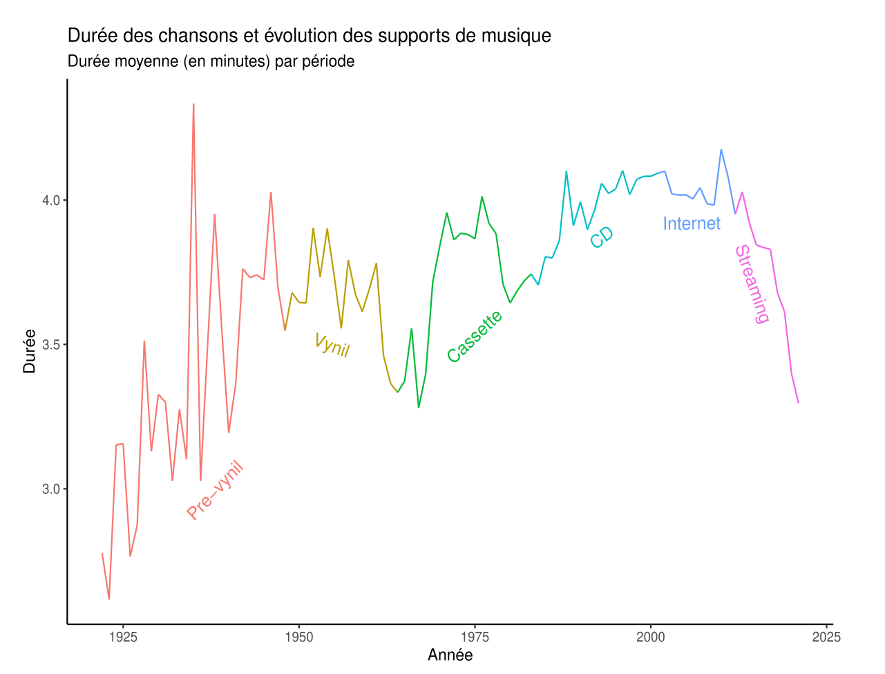

Durée des chansons & support physique
Je me suis amusée à mettre en image un phénomène assez documenté et facile à percevoir : depuis l'avènement du streaming, la durée des chansons est de plus en plus courte.
En allant chercher des données sur kaggle, j'ai regardé plus généralement comment a évolué la durée des chansons en fonction du support du moment. Voici le résultat :

On voit que la durée a globalement augmenté, d'environ 2 minutes et demi en moyenne en 1925 vers plus de 4 minutes en 2000.
On note toutefois beaucoup de variation dans la durée moyenne. Ces variations semblent explicable par la sortie de nouveaux supports de stockage de la musique. On annote le graphique avec les dates d'introduction des nouveaux supports de musique et mode de consommation (vynil, cassette, CD et streaming). On observe que l'apparition de nouveaux supports explique clairement ces variations.
Le vinyl 33 tours, apparu en 1948, permet de stocker de 40 minute à une heure de musique. En 1963 sort la cassette audio, qui, en plus de pouvoir être réenregistrable, permet aussi un stockage plus important, entre une heure et deux heures de musique.
Le CD apparaît en 1982, mais il ne permet pas de stocker beaucoup plus de musique que la cassette. Cependant, on peut avoir deux disques par boite (un double album), ce qui a peut-être permis d'allonger encore la durée de musique disponible. On observe donc une légère hausse, puis une stagnation, notamment dans les années 2000, où la musique se télécharge de plus en plus sur internet, grace au format MP3 et à la massification de l'accès domestique à internet.
En 2011, la plateforme Spotify est "live", avec un modèle économique qui paye les artistes sur le nombre d'écoute. Cela incite à produire des chansons toujours plus courtes, et on observe la fameuse "mort du troisième couplet", en 2020, la durée moyenn d'une chanson est en dessous des trois minutes et demi.
Annexe technique
Base de donnée : https://www.kaggle.com/datasets/yamaerenay/spotify-dataset-19212020-600k-tracks?select=tracks.csv
On formatte les données en appliquant les opérations suivantes :
- on garde uniquement les années dans les date de publication des chansons
- on les discrétise en périodes de 5 ans afin de lisser les données et d'éviter de trop grandes variations dans les graphiques
- on convertit la durée des chansons en minutes
On remarque dans le summary des données que les colonnes Date ont des valeurs manquantes. J'ai simplement supprimé ces ces valeurs sans trop m'inquiéter à des biais liés aux valeurs manquantes, cela pourrait éventuellement faire l'objet d'une analyse plus détaillée.
library(tidyr)
library(dplyr)
library(ggplot2)
knitr::opts_chunk$set(echo = TRUE, fig.width = 7, fig.height = 4)
data_origin = read.csv("data/tracks.csv")
data = tibble(data_origin)
# grouping dates
data = data %>%
mutate(release_date = as.numeric(substr(as.character(release_date), 1, 4)))
date_break_list = seq(1920,2020,5)
data = data %>%
mutate(release_date =
cut(release_date, breaks=date_break_list))
# format duration as minutes
data = data %>%
mutate(duration = duration_ms/60000)
device_dates = c(1947,1963,1982,2000,2011)
device_names = c("Pre-vynil", "Vynil", "Cassette", "CD", "MP3", "Streaming")
data$device=cut(data$release_date,c(-Inf,device_dates,Inf))
levels(data$device) = device_names
p = data %>%
group_by(release_date, device) %>%
summarize(mean_duration = mean(duration)) %>%
ggplot() + aes(x=release_date, y=mean_duration,group=1, color=device) +
geom_line(show.legend = FALSE) +
labs(title = "Durée des chansons et évolution des supports de musique",
subtitle = "Durée moyenne (en minutes) par période",
x ="Année",
y = "Durée")
dl2 = list("far.from.others.borders",
"calc.boxes",
"enlarge.box",
directlabels::dl.trans(box.color="red"),
"draw.rects")
p = directlabels::direct.label(p,dl2)
p + theme_classic()
source sur les supports physiques :